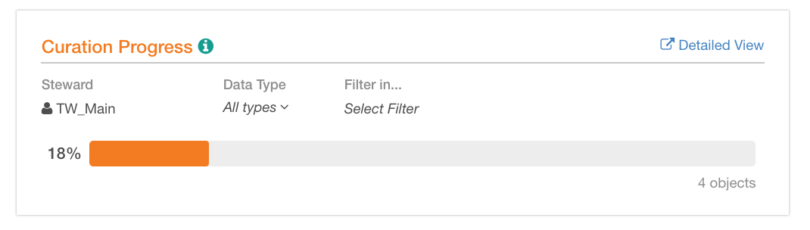
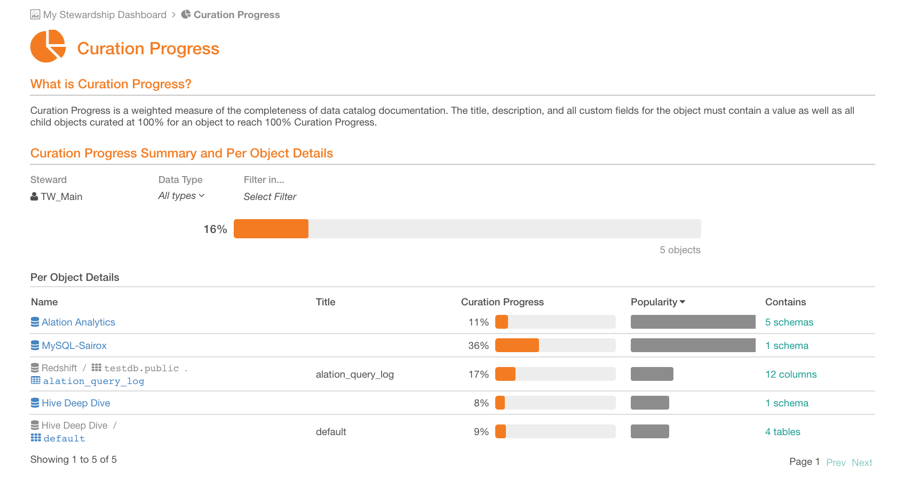
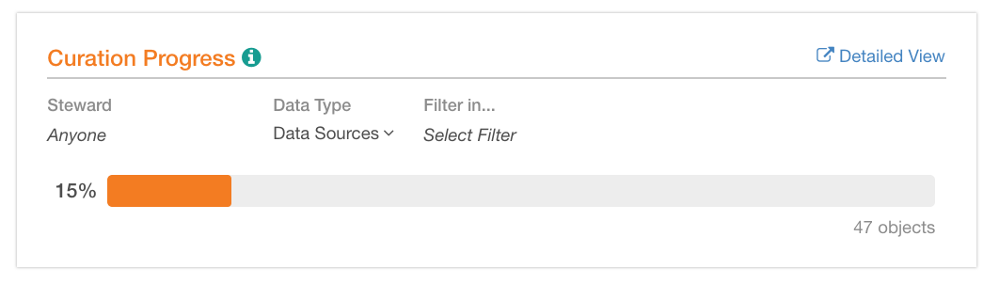

Curation Progress¶
Alation Cloud Service Applies to Alation Cloud Service instances of Alation
Customer Managed Applies to customer-managed instances of Alation
Available from release V R3 (5.6.x)
By default, the report is pre-filtered for the current user being the steward. The current user is added to the Steward field on data objects.
The calculation is performed on the Title, Description, standard (“built-in”), and custom fields for each object as well as all of the child objects of the parent object where Steward = a specific user. All of the fields must be curated, be filled with a value, for an object to reach 100 percent curation progress.
The overall completion of curation of data objects by a steward is represented as a horizontal graph with percentage of completion along with the number of objects.
Summary View on My Stewardship Dashboard¶
Note that My Stewardship Dashboard shows an “at a glance” summary of this report.
Curation Progress summary view has several filters you can use to focus on a more specific set of catalog objects:
Steward value of the Steward field on a data object. The default view is to display the curation progress for the logged in user. If you select a different user, the report will change to show the curation progress of the selected user. You can also remove this filter and view the data for all Stewards.
Data Type List filter with such options as Data Sources, Schemas, Tables, and Columns. Use this filter to narrow the report down to one type of catalog objects.
Filter In Quick filter that allows searching for and filtering for a specific object. You can search among available specific:
Data
Sources
Schemas
Tables
Note
When you set Filter In, Alation will auto-set the Data Type filter to the child object type of the selected object and disable the Data Type filter. Thus, Filter In sets the parent object.
For example, if you select Schema “Schema A” in Filter In, then the Data Type filter will be automatically set to Tables.
You can use the Data Type and Filter In filters consecutively together if you select a child data type in Data Type and a parent object in Filter In. For example, if you select “Schema” in Data Type, you can then select a specific Data Source in Filter In to view the curation progress for all schemas in this data source.
You can also use them as independent filters selecting one or the other depending on the purpose of analysis:
To view the curation progress for a type of data objects,- all Data Sources, Schemas or Tables, use the Data Type filter.
To view the curation progress for a specific object, one particular Data Source, Schema or Table, use the Filter In filter.
Full View of Curation Progress Report¶
the Curation Progress report has a full view that can be accessed,
from the Curate menu, using the Curation Progress link.
from My Stewardship Dashboard, clicking the Detailed View link on the upper right of the report.
In full view, Curation Progress is visible in both the Curation Progress Summary (this is the part that also appears on My Stewardship Dashboard) and Per Object Details. The filtering options above the summary progress bar function the same as they do on My Stewardship Dashboard. Filtering affects both the summary progress bar and the Per Object Details displayed.
The Per Object Details part of the report has the following fields:
Name Name of the object
Title Title of the object generated by Lexicon
Curation Progress Curation progress bar in percent, for each object
Popularity Popularity of the object bar. By default, the view is sorted in descending order by this column, with the most popular object on top.
Has Number of child objects. Click this number to filter the Curation Progress bar on top by this object type: it will automatically be added to the Data Type filter and the specific parent object will appear in the Filter In filter.
To review the page of a specific object in Per Object Details, click the name of this object.
Understanding the Curation Progress Value¶
Curation Progress represents how much of “logical metadata” - or catalog fields - is filled in for data objects in the catalog. Logical metadata includes:
“Built-in” fields: Title, Description, Flags, Tags
Custom fields
Only custom fields that have already been applied to the custom template for the given data type (Data Source, Schema, Table, and Column) are considered for the calculation. If you add new custom fields to the templates, it will change the curation progress for the object. For more about templates, see Creating Custom Fields for Catalog Pages.
Curation progress of a data object is a weighted measure of:
Direct curation status of this object that shows how many logical metadata fields are filled in for this specific object.
Catalog set shared properties are also taken into account for objects that are members of the catalog set. Any empty shared fields of a catalog set will be counted as “not curated” in the overall curation calculation. For details on Catalog sets, see Creating and Using Catalog Sets.
Curation status of child objects, which is the aggregated, average, curation status of the child objects weighted by popularity.
Because Popularity can be zero, we use 1+popularity in the formula.
An object cannot reach 100 percent curation progress unless all its child objects have 100 percent curation progress too.
Weight for direct curation status of the object and curation status of its child objects is assumed to be equal. We assign these parts of the calculation 50 percent each.
If an object does not have children (for example, such objects as Columns), then the weight for the Direct object status is 100 percent.
Calculation¶
To calculate the Curation Progress of each object type:
We start with Attribute object type (this stands for column objects). For each column, the curation status is calculated using the following formula:
∑(has_value) / number of fieldsWhere
has_valueis a boolean that indicates if the field is filled or not:1for filled0for empty,
And number of fields is the number of fields which participate in this calculation. This is the direct curation status for this object type (column).
Then we move up the object hierarchy to each next object level (to Table, to Schema, to Data Source, and compute the curation progress for each object using the following formula:
[50% \* ∑ (has value) / number of fields] +[50% \* ∑(child object curation status \* (1+ child object Popularity)) /∑(1 + child object Popularity)]where,
50%*∑(has value) / number of fields is the direct curation status of the current object;
50%*∑(child object curation status * (1+ child object Popularity)) /∑(1 + child object Popularity)is the average curation status of its child objects weighted by popularity.
This way, curation progress is calculated for object of type:
Table (with Columns as child objects)
Schema (with Tables as child objects)
Data Source (with Schemas as child objects)
Example¶
In the Curation Progress report that you see in Alation, the results of the calculations for each object are aggregated as an average across all objects in the selected object type or across all objects, depending on the filter you set. For example, in a report like this:
The result of 15 percent is the average curation progress across all data sources calculated as the sum of curation progress values for all data sources divided by the number of data sources in the catalog.